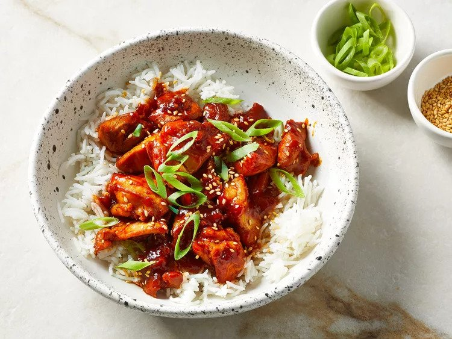

Sweet and Spicy Gochujang Chicken

Description
Gochujang chicken is typically cooked and served at a "Sutbul Dakgalbi” (숯불 닭갈비) restaurant in Korea. It means chargrilled spicy BBQ chicken. This recipe uses a wok or large skillet.
When you dine at a BBQ restaurant, the chicken is already cut into smaller bite size pieces so that you can eat them as they get cooked from the grill in the center of the table.
Ingredients
- 1/3 cup gochujang (Korean hot pepper paste)
- 4 tablespoons sodium-reduced soy sauce
- 2 tablespoons sweet rice wine (mirin)
- 2 tablespoons honey
- 3 cloves garlic, grated
- 1 teaspoon sesame oil, or more to taste
- 1 teaspoon freshly grated ginger
- 1 tablespoon canola oil
- 2 pounds skinless, boneless chicken thighs, cut into bite-size pieces
- 1 1/2 teaspoons toasted sesame seeds
- 3 tablespoons thinly bias-sliced green onions
- 6 cups cooked rice
Steps
- Gather all ingredients.
- Stir together gochujang, soy sauce, sweet rice wine, honey, garlic, sesame oil, and ginger in a small bowl.
- Heat oil over medium-high in a wok or large skillet. Add half of the chicken to the wok; cook and stir over medium-high until chicken is no longer pink, about 5 minutes.
- Remove chicken from the wok. Repeat with remaining chicken. Return all cooked chicken pieces to the wok.
- Stir sauce well. Add to the wok; cook and stir until sauce has thickened and is bubbly, about 3 minutes.
- Top with sesame seeds and green onions. Serve immediately with rice.
- Enjoy!
Back to Home